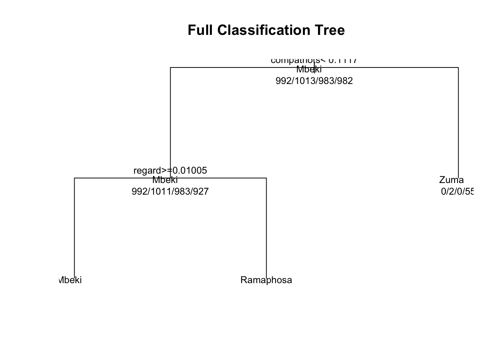
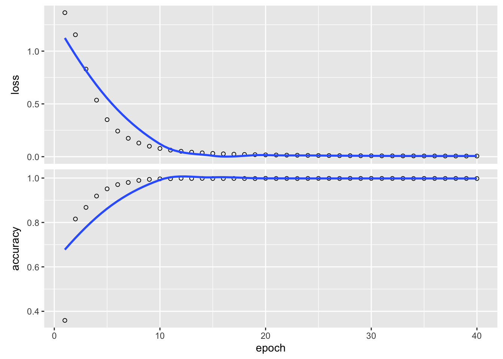
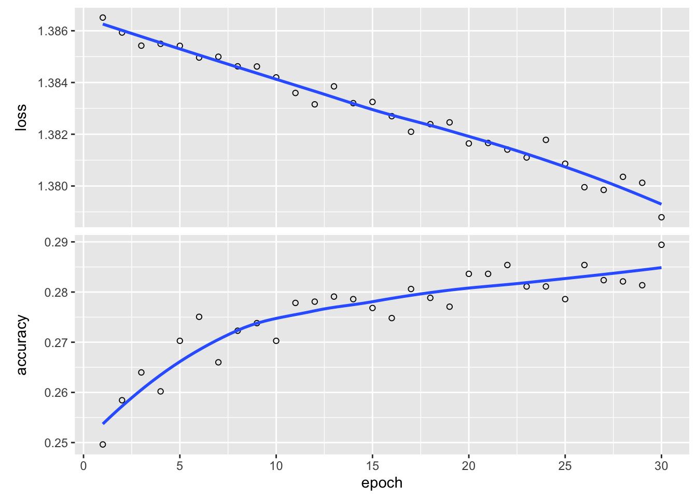

Assignment 1: Report
Abstract
Introduction
The aim of this assignment is to ‘predict the president’. The data set given is a collection of 36 State of the Nation speeches in South Africa, delivered between 1994 and 2022. The aim of the assignment is to ‘predict the president’ by building a model that takes in as a input a particular sentences and returns a prediction of which president said the sentence. The assignment thus focuses on text mining and manipulation as well as predictive models, particularly focusing on neural networks. A brief literature review is first given. Following this the data cleaning and exploration will be detailed and key features of the data discussed. The methods used to construct the different predictive models as well as format the data will then outline. Results of the different predictive models will be presented and discussed and final conclusions made.
Literature Review
Data Cleaning, Tokenization, and Exploration
The data that is used in this particular problem are the State of the Nation speeches in South Africa from 1994 to 2022. There a 36 speeches given by 6 different presidents, namely Mandela, de Klerk, Mbkei, Zuma, Motlanthe and Ramaphosa.. The initial steps in the solving the predict the president problem is to break the speeches up into their indivudal sentences and remove any unwanted characters, numbers or punctuation marks. The speeches were tokenized, broken up into smaller parts, using the unnest_tokens function in R. Each speech was split up into its sentences and the new data structure included the sentence along with the president who said it. For modelling purposes the sentences need to be only made up of their words so that when each sentence is tokenized into words, punctuation marks and numbers are not recognized as individual words. In order to do this the str_replace_all() function in the stringr package was used in order to remove any unwanted characters which were specified using a regual expression (regex). Number, commas, question marks and exclamation marks are some examples of the characters that were removed from analysis.
Some exploration is reuired to check how imbalanced these classes are in terms of how many sentences are linked with each president. Table 1 below indicates the number of sentences associated with each president. It is clear that de Klerk and Motlanthe have much fewer associated sentences, this is expected as each of them only delivered one speech. Because of this large discrepancy in number of sentences, de Klerk and Motlanthe are removed from the analysis. The remaining four classes are still imbalanced with Mandela having the fewest sentences with 1665. To account for this all classes are made to have 1665 sentences and this is done by sampling without replacement 1665 sentences from the remaining three presidents: Mbeki, Zuma and Ramaphosa.
Table 1: Number of sentences by each president.
| de Klerk | Mandela | Mbeki | Motlanthe | Ramaphosa | Zuma |
|---|---|---|---|---|---|
| 97 | 1665 | 2419 | 266 | 2286 | 2656 |
Having split the speeches up into sentences and removed the unwanted characters and balancing the number of sentences per president, each sentence could then be tokenized into its individual words. The sentences need to be broken down into words in order to create bag of words data structures which will be used in the predictive models.
Again the unnest_tokens() function is used to break the sentences up into words where each word is now associated with a president and sentence number in order to keep track of which words belong in which sentences and who said them.
Stop words are then removed.
Then bag of words format created
Then tfidf format created
What about top 200 words.
Joining with `by = join_by(word)`
Joining with `by = join_by(sentence_ID)`We now have our bag of words each associated with a sentence ID and president name. This bag of words is word counts we also need to set up tfidf.
TFIDF
Joining with `by = join_by(sentence_ID)`Now have bag of words with counts and with TFIDF
Need to add one where we only consider top 500 words said by each president.
Joining with `by = join_by(sentence_ID)`
Joining with `by = join_by(sentence_ID)`Training, Validation and Test splits
Now need to create training, validation and test splits with the data - by president so that classes are balanced.
Training = 60% Validation = 30% Test = 10%
Joining with `by = join_by(sentence_ID)`
Joining with `by = join_by(sentence_ID)`Now that we have got the ids for the train, validation and test set we can start fitting some models. Starting with a simple classfication tree and using count bag of words.
fittedtrain
Mandela Mbeki Ramaphosa Zuma
Mandela 0 31 961 0
Mbeki 0 77 934 2
Ramaphosa 0 1 982 0
Zuma 0 8 919 55[1] 0.281 fittedtest
Y_val Mandela Mbeki Ramaphosa Zuma
Mandela 0 22 473 0
Mbeki 0 27 449 0
Ramaphosa 0 0 510 0
Zuma 0 7 468 29[1] 0.285Clearly the classification tree is not doing very well on word counts bag of words model. What about tfidf

fittedtrain
Mandela Mbeki Ramaphosa Zuma
Mandela 0 31 961 0
Mbeki 0 77 934 2
Ramaphosa 0 1 982 0
Zuma 0 8 919 55[1] 0.281 fittedtest
Y_val Mandela Mbeki Ramaphosa Zuma
Mandela 0 22 473 0
Mbeki 0 27 449 0
Ramaphosa 0 0 510 0
Zuma 0 7 468 29[1] 0.285Clearly the classification tree is not doing well so now we try a neural network.
library(keras)
# This may be ruining the run
# noticed that after running this, your
# Dimensions don't match up
#zero_columns_train <- apply(X_train, 2, function(col) all(col == 0))
#X_train = X_train[,!zero_columns_train]
#X_val = X_val[,!zero_columns_train]
#X_test = X_test[,!zero_columns_train]
training_data_tfidf = tfidf %>%
right_join(train_ids, by='sentence_ID') %>%
select(-sentence_ID)
X_train = training_data_tfidf[,2:ncol(training_data_tfidf)]
Y_train = as.factor(training_data_tfidf$president_name)
val_data_tfidf = tfidf %>%
right_join(val_ids, by='sentence_ID') %>%
select(-sentence_ID)
X_val = val_data_tfidf[,2:ncol(val_data_tfidf)]
Y_val = as.factor(val_data_tfidf$president_name)
test_data_tfidf = tfidf %>%
right_join(test_ids, by='sentence_ID') %>%
select(-sentence_ID)
X_test = test_data_tfidf[,2:ncol(test_data_tfidf)]
Y_test = as.factor(test_data_tfidf$president_name)
# Added this in
X_train <- as.matrix(X_train)
X_val <- as.matrix(X_val)
# This is how keras takes in one-hot encoding
Y_train <- to_categorical(as.integer(unlist(Y_train)) - 1)
Y_val <- to_categorical(as.integer(unlist(Y_val)) - 1)
model <- keras_model_sequential() %>%
layer_dense(units = 100, input_shape = c(9085), activation = "relu") %>%
layer_dense(units = 4, activation = "softmax")
summary(model)Model: "sequential"
________________________________________________________________________________
Layer (type) Output Shape Param #
================================================================================
dense_1 (Dense) (None, 100) 908600
dense (Dense) (None, 4) 404
================================================================================
Total params: 909004 (3.47 MB)
Trainable params: 909004 (3.47 MB)
Non-trainable params: 0 (0.00 Byte)
________________________________________________________________________________model %>% compile(
loss = "categorical_crossentropy",
optimizer = "adam",
metrics = "accuracy"
)
history <- model %>% fit(X_train, Y_train, epochs = 40, batch_size = 100, verbose = 0)
plot(history)
results <- model %>% evaluate(X_val, Y_val, batch_size=128, verbose = 2)16/16 - 0s - loss: 1.9720 - accuracy: 0.5446 - 74ms/epoch - 5ms/stepNow lets try a cnn
[1] "it must be electrified and supplied with water"[[1]]
[1] 1 2 3 4 5 6 7 8$it
[1] 1
$must
[1] 2
$be
[1] 3
$electrified
[1] 4
$and
[1] 5
$supplied
[1] 6
$with
[1] 7
$water
[1] 8Model: "sequential_1"
________________________________________________________________________________
Layer (type) Output Shape Param #
================================================================================
embedding (Embedding) (None, 15, 10) 10000
dropout (Dropout) (None, 15, 10) 0
flatten (Flatten) (None, 150) 0
dense_3 (Dense) (None, 100) 15100
dense_2 (Dense) (None, 4) 404
================================================================================
Total params: 25504 (99.62 KB)
Trainable params: 25504 (99.62 KB)
Non-trainable params: 0 (0.00 Byte)
________________________________________________________________________________
embedding_dims <- 10
model <- keras_model_sequential() %>%
layer_embedding(max_features, output_dim = embedding_dims, input_length = maxlen) %>%
layer_dropout(0.2) %>%
layer_conv_1d(filters = 64, kernel_size = 8, activation = "relu") %>%
layer_max_pooling_1d(pool_size = 2) %>%
layer_flatten() %>%
layer_dense(300, activation = "relu") %>%
layer_dense(4, activation = "softmax")
summary(model)Model: "sequential_2"
________________________________________________________________________________
Layer (type) Output Shape Param #
================================================================================
embedding_1 (Embedding) (None, 15, 10) 10000
dropout_1 (Dropout) (None, 15, 10) 0
conv1d (Conv1D) (None, 8, 64) 5184
max_pooling1d (MaxPooling1D) (None, 4, 64) 0
flatten_1 (Flatten) (None, 256) 0
dense_5 (Dense) (None, 300) 77100
dense_4 (Dense) (None, 4) 1204
================================================================================
Total params: 93488 (365.19 KB)
Trainable params: 93488 (365.19 KB)
Non-trainable params: 0 (0.00 Byte)
________________________________________________________________________________model %>% compile(
loss = "categorical_crossentropy",
optimizer = "adam",
metrics = "accuracy"
)
history <- model %>% fit(x_train,Y_train,
batch_size = 600, epochs = 30, verbose = 0)
plot(history)
results <- model %>% evaluate(x_test, Y_val, batch_size=600, verbose = 2)4/4 - 0s - loss: 1.3973 - accuracy: 0.2413 - 63ms/epoch - 16ms/stepLets try random forest with tfidf
library(ranger)
X_tfidf = tfidf[,3:ncol(tfidf)]
X_tfidf_train = X_tfidf[train_ids$sentence_ID,]
Y_train_forest = (tfidf[train_ids$sentence_ID,2])
# Assuming your response variable is in 'y' and your bag of words matrix is in 'X'
model <- ranger(tfidf[train_ids$sentence_ID,2], tfidf[train_ids$sentence_ID,-c(2)], num.trees = 100, importance = "permutation")What about multinomial logistic regression?